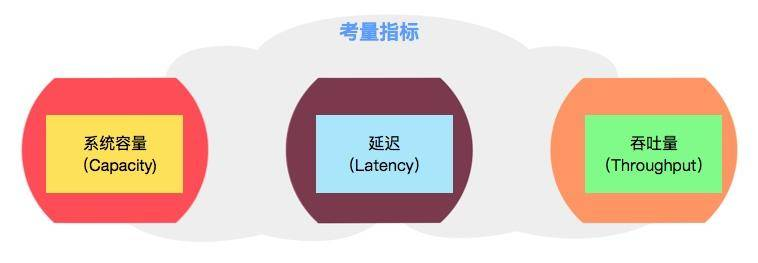
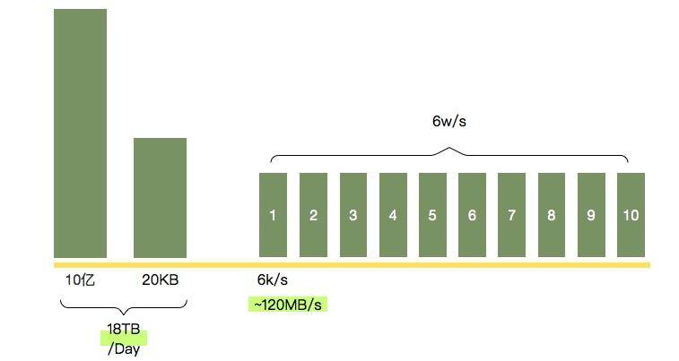
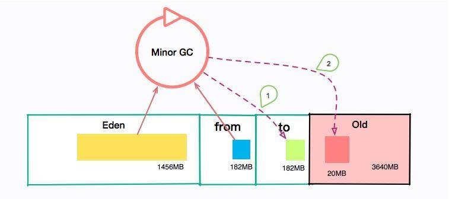
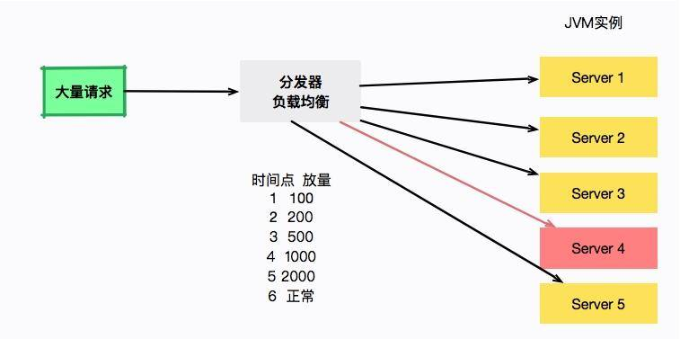

- 00 开篇词：JVM，一块难啃的骨头.md.html
- 01 一探究竟：为什么需要 JVM？它处在什么位置？.md.html
- 02 大厂面试题：你不得不掌握的 JVM 内存管理.md.html
- 03 大厂面试题：从覆盖 JDK 的类开始掌握类的加载机制.md.html
- 04 动手实践：从栈帧看字节码是如何在 JVM 中进行流转的.md.html
- 05 大厂面试题：得心应手应对 OOM 的疑难杂症.md.html
- 06 深入剖析：垃圾回收你真的了解吗？（上）.md.html
- 07 深入剖析：垃圾回收你真的了解吗？（下）.md.html
- 08 大厂面试题：有了 G1 还需要其他垃圾回收器吗？.md.html
- 09 案例实战：亿级流量高并发下如何进行估算和调优.md.html
- 10 第09讲：案例实战：面对突如其来的 GC 问题如何下手解决.md.html
- 11 第10讲：动手实践：自己模拟 JVM 内存溢出场景.md.html
- 12 第11讲：动手实践：遇到问题不要慌，轻松搞定内存泄漏.md.html
- 13 工具进阶：如何利用 MAT 找到问题发生的根本原因.md.html
- 14 动手实践：让面试官刮目相看的堆外内存排查.md.html
- 15 预警与解决：深入浅出 GC 监控与调优.md.html
- 16 案例分析：一个高死亡率的报表系统的优化之路.md.html
- 17 案例分析：分库分表后，我的应用崩溃了.md.html
- 18 动手实践：从字节码看方法调用的底层实现.md.html
- 19 大厂面试题：不要搞混 JMM 与 JVM.md.html
- 20 动手实践：从字节码看并发编程的底层实现.md.html
- 21 动手实践：不为人熟知的字节码指令.md.html
- 22 深入剖析：如何使用 Java Agent 技术对字节码进行修改.md.html
- 23 动手实践：JIT 参数配置如何影响程序运行？.md.html
- 24 案例分析：大型项目如何进行性能瓶颈调优？.md.html
- 25 未来：JVM 的历史与展望.md.html
- 26 福利：常见 JVM 面试题补充.md.html
09 案例实战：亿级流量高并发下如何进行估算和调优
本课时主要讲解如何在大流量高并发场景下进行估算和调优。
我们知道，垃圾回收器一般使用默认参数，就可以比较好的运行。但如果用错了某些参数，那么后果可能会比较严重，我不只一次看到有同学想要验证某个刚刚学到的优化参数，结果引起了线上 GC 的严重问题。
所以你的应用程序如果目前已经满足了需求，那就不要再随便动这些参数了。另外，优化代码获得的性能提升，远远大于参数调整所获得的性能提升，你不要纯粹为了调参数而走了弯路。
那么，GC 优化有没有可遵循的一些规则呢？这些“需求”又是指的什么？我们可以将目标归结为三点：
- 系统容量（Capacity）
- 延迟（Latency）
- 吞吐量（Throughput）
考量指标

系统容量
系统容量其实非常好理解。比如，领导要求你每个月的运维费用不能超过 x 万，那就决定了你的机器最多是 2C4G 的。
举个比较极端的例子。假如你的内存是无限大的，那么无论是存活对象，还是垃圾对象，都不需要额外的计算和回收，你只需要往里放就可以了。这样，就没有什么吞吐量和延迟的概念了。
但这毕竟是我们的一厢情愿。越是资源限制比较严格的系统，对它的优化就会越明显。通常在一个资源相对宽松的环境下优化的参数，平移到另外一个限制资源的环境下，并不是最优解。
吞吐量-延迟
接下来我们看一下吞吐量和延迟方面的概念。
假如你开了一个面包店，你的首要目标是卖出更多的面包，因为赚钱来说是最要紧的。
为了让客人更快买到面包，你引进了很多先进的设备，使得制作面包的间隔减少到 30 分钟，一批面包可以有 100 个。
工人师傅是拿工资的，并不想和你一样加班。按照一天 8 小时工作制，每天就可以制作 8x2x100=1600 个面包。
但是你很不满意，因为每天的客人都很多，需求大约是 2000 个面包。
你只好再引进更加先进的设备，这种设备可以一次做出 200 个面包，一天可以做 2000~3000 个面包，但是每运行一段时间就需要冷却一会儿。
原来每个客人最多等 30 分钟就可以拿到面包，现在有的客人需要等待 40 分钟。客人通常受不了这么长的等待时间，第二天就不来了。
考虑到我们的营业目标，就可以抽象出两个概念。
- 吞吐量，也就是每天制作的面包数量。
- 延迟，也就是等待的时间，涉及影响顾客的满意度。

吞吐量大不代表响应能力高，吞吐量一般这么描述：在一个时间段内完成了多少个事务操作；在一个小时之内完成了多少批量操作。
响应能力是以最大的延迟时间来判断的，比如：一个桌面按钮对一个触发事件响应有多快；需要多长时间返回一个网页；查询一行 SQL 需要多长时间，等等。
这两个目标，在有限的资源下，通常不能够同时达到，我们需要做一些权衡。
选择垃圾回收器
接下来，再回顾一下前面介绍的垃圾回收器，简单看一下它们的应用场景。
- 如果你的堆大小不是很大（比如 100MB），选择串行收集器一般是效率最高的。参数：-XX:+UseSerialGC。
- 如果你的应用运行在单核的机器上，或者你的虚拟机核数只有 1C，选择串行收集器依然是合适的，这时候启用一些并行收集器没有任何收益。参数：-XX:+UseSerialGC。
- 如果你的应用是“吞吐量”优先的，并且对较长时间的停顿没有什么特别的要求。选择并行收集器是比较好的。参数：-XX:+UseParallelGC。
- 如果你的应用对响应时间要求较高，想要较少的停顿。甚至 1 秒的停顿都会引起大量的请求失败，那么选择 G1、ZGC、CMS 都是合理的。虽然这些收集器的 GC 停顿通常都比较短，但它需要一些额外的资源去处理这些工作，通常吞吐量会低一些。参数：-XX:+UseConcMarkSweepGC、-XX:+UseG1GC、-XX:+UseZGC 等。
从上面这些出发点来看，我们平常的 Web 服务器，都是对响应性要求非常高的。选择性其实就集中在 CMS、G1、ZGC 上。
而对于某些定时任务，使用并行收集器，是一个比较好的选择。
大流量应用特点
这是一类对延迟非常敏感的系统。吞吐量一般可以通过堆机器解决。
如果一项业务有价值，客户很喜欢，那亿级流量很容易就能达到了。假如某个接口一天有 10 亿次请求，每秒的峰值大概也就 5~6 w/秒，虽然不算是很大，但也不算小。最直接的影响就是：可能你发个版，几万用户的请求就抖一抖。
一般达到这种量级的系统，承接请求的都不是一台服务器，接口都会要求快速响应，一般不会超过 100ms。
这种系统，一般都是社交、电商、游戏、支付场景等，要求的是短、平、快。长时间停顿会堆积海量的请求，所以在停顿发生的时候，表现会特别明显。我们要考量这些系统，有很多指标。
- 每秒处理的事务数量（TPS）；
- 平均响应时间（AVG）；
- TP 值，比如 TP90 代表有 90% 的请求响应时间小于 x 毫秒。
可以看出来，它和 JVM 的某些指标很像。
尤其是 TP 值，最能代表系统中到底有多少长尾请求，这部分请求才是影响系统稳定性的元凶。大多数情况下，GC 增加，长尾请求的数量也会增加。
我们的目标，就是减少这些停顿。本课时假定使用的是 CMS 垃圾回收器。
估算
在《编程珠玑》第七章里，将估算看作程序员的一项非常重要的技能。这是一种化繁为简的能力，不要求极度精确，但对问题的分析有着巨大的帮助。
拿一个简单的 Feed 业务来说。查询用户在社交网站上发送的帖子，还需要查询第一页的留言（大概是 15 条），它们共同组成了每次查询后的实体。
class Feed{
private User user;
private List<Comment> commentList;
private String content;
}
这种类型的数据结构，一般返回体都比较大，大概会有几 KB 到几十 KB 不等。我们就可以对这些数据进行以大体估算。具体的数据来源可以看日志，也可以分析线上的请求。

这个接口每天有 10 亿次请求，假如每次请求的大小有 20KB（很容易达到），那么一天的流量就有 18TB 之巨。假如高峰请求 6w/s，我们部署了 10 台机器，那么每个 JVM 的流量就可以达到 120MB/s，这个速度算是比较快的了。
如果你实在不知道怎么去算这个数字，那就按照峰值的 2 倍进行准备，一般都是 OK 的。
调优
问题是这样的，我们的机器是 4C8GB 的，分配给了 JVM 10248GB/32= 5460MB 的空间。那么年轻代大小就有 5460MB/3=1820MB。进而可以推断出，Eden 区的大小约 1456MB，那么大约只需要 12 秒，就会发生一次 Minor GC。不仅如此，每隔半个小时，会发生一次 Major GC。
不管是年轻代还是老年代，这个 GC 频率都有点频繁了。
提醒一下，你可以算一下我们的 Survivor 区大小，大约是 182MB 左右，如果稍微有点流量偏移，或者流量突增，再或者和其他接口共用了 JVM，那么这个 Survivor 区就已经装不下 Minor GC 后的内容了。总有一部分超出的容量，需要老年代来补齐。这些垃圾信息就要保存更长时间，直到老年代空间不足。

我们发现，用户请求完这些信息之后，很快它们就会变成垃圾。所以每次 MinorGC 之后，剩下的对象都很少。 也就是说，我们的流量虽然很多，但大多数都在年轻代就销毁了。如果我们加大年轻代的大小，由于 GC 的时间受到活跃对象数的影响，回收时间并不会增加太多。 如果我们把一半空间给年轻代。也就是下面的配置：
-XX:+UseConcMarkSweepGC -Xmx5460M -Xms5460M -Xmn2730M
重新估算一下，发现 Minor GC 的间隔，由 12 秒提高到了 18 秒。
线上观察：
[ParNew: 2292326K‐>243160K(2795520K), 0.1021743 secs]
3264966K‐>10880154K(1215800K), 0.1021417 secs]
[Times: user=0.52 sys=0.02, real=0.2 secs]
Minor GC 有所改善，但是并没有显著的提升。相比较而言，Major GC 的间隔却增加到了 3 小时，是一个非常大的性能优化。这就是在容量限制下的初步调优方案。
此种场景，我们可以更加激进一些，调大年轻代（顺便调大了幸存区），让对象在年轻代停留的时间更长一些，有更多的 buffer 空间。这样 Minor GC 间隔又可以提高到 23 秒。参数配置：
-XX:+UseConcMarkSweepGC -Xmx5460M -Xms5460M -Xmn3460M
一切看起来很美好，但还是有一个瑕疵。
问题如下：由于每秒的请求都非常大，如果应用重启或者更新，流量瞬间打过来，JVM 还没预热完毕，这时候就会有大量的用户请求超时、失败。
为了解决这种问题，通常会逐步的把新发布的机器进行放量预热。比如第一秒 100 请求，第二秒 200 请求，第三秒 5000 请求。大型的应用都会有这个预热过程。

如图所示，负载均衡器负责服务的放量，server4 将在 6 秒之后流量正常流通。但是奇怪的是，每次重启大约 20 多秒以后，就会发生一次诡异的 Full GC。
注意是 Full GC，而不是老年代的 Major GC，也不是年轻代的 Minor GC。
事实上，经过观察，此时年轻代和老年代的空间还有很大一部分，那 Full GC 是怎么产生的呢？
一般，Full GC 都是在老年代空间不足的时候执行。但不要忘了，我们还有一个区域叫作 Metaspace，它的容量是没有上限的，但是每当它扩容时，就会发生 Full GC。
使用下面的命令可以看到它的默认值：
java -XX:+PrintFlagsFinal 2>&1 | grep Meta 默认值如下：
size_t MetaspaceSize = 21807104 {pd product} {default}
size_t MaxMetaspaceSize = 18446744073709547520 {product} {default}
可以看到 MetaspaceSize 的大小大约是 20MB。这个初始值太小了。
现在很多类库，包括 Spring，都会大量生成一些动态类，20MB 很容易就超了，我们可以试着调大这个数值。
按照经验，一般调整成 256MB 就足够了。同时，为了避免无限制使用造成操作系统内存溢出，我们同时设置它的上限。配置参数如下：
-XX:+UseConcMarkSweepGC -Xmx5460M -Xms5460M -Xmn3460M -XX:MetaspaceSize=256M -XX:MaxMetaspaceSize=256M
经观察，启动后停顿消失。
这种方式通常是行之有效的，但也可以通过扩容机器内存或者扩容机器数量的办法，显著地降低 GC 频率。这些都是在估算容量后的优化手段。
我们把部分机器升级到 8C16GB 的机器，使用如下的参数:
-XX:+UseConcMarkSweepGC -Xmx10920M -Xms10920M -Xmn5460M -XX:MetaspaceSize=256M -XX:MaxMetaspaceSize=256M
相比较其他实例，系统运行的特别棒，系统平均 1 分钟左右发生一次 MinorGC，老年代观察了一天才发生 GC，响应水平明显提高。
这是一种非常简单粗暴的手段，但是有效。我们看到，对 JVM 的优化，不仅仅是优化参数本身。我们的目的是解决问题，寻求多种有用手段。
总结
其实，如果没有明显的内存泄漏问题和严重的性能问题，专门调优一些 JVM 参数是非常没有必要的，优化空间也比较小。 所以，我们一般优化的思路有一个重要的顺序：
- 程序优化，效果通常非常大；
- 扩容，如果金钱的成本比较小，不要和自己过不去；
- 参数调优，在成本、吞吐量、延迟之间找一个平衡点。
本课时主要是在第三点的基础上，一步一步地增加 GC 的间隔，达到更好的效果。
我们可以再加一些原则用以辅助完成优化。
- 一个长时间的压测是必要的，通常我们使用 JMeter 工具。
- 如果线上有多个节点，可以把我们的优化在其中几个节点上生效。等优化真正有效果之后再全面推进。
- 优化过程和目标之间可能是循环的，结果和目标不匹配，要推翻重来。
我们的业务场景是高并发的。对象诞生的快，死亡的也快，对年轻代的利用直接影响了整个堆的垃圾收集。
- 足够大的年轻代，会增加系统的吞吐，但不会增加 GC 的负担。
- 容量足够的 Survivor 区，能够让对象尽可能的留在年轻代，减少对象的晋升，进而减少 Major GC。
我们还看到了一个元空间引起的 Full GC 的过程，这在高并发的场景下影响会格外突出，尤其是对于使用了大量动态类的应用来说。通过调大它的初始值，可以解决这个问题。